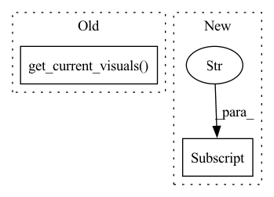

Pattern ID :26850

Before Change
model.set_input(val_data)
model.val()
Logger.save_current_results(total_epoch, total_iters, model.save_current_results(), phase="val")
Logger.display_current_results(total_epoch, total_iters, model.get_current_visuals(), phase="val")
Logger.print_current_logs(total_epoch, total_iters, model.get_current_log(), phase="val")
if __name__ == "__main__":
After Change
Logger.init_logger(opt=opt)
base_logger = logging.getLogger("base")
phase_logger = logging.getLogger(opt["phase"])
if opt["phase"] == "train":
val_logger = logging.getLogger("val")
if opt["global_rank"]==0:
base_logger.info(Praser.dict2str(opt))
In pattern: SUPERPATTERN
Frequency: 3
Non-data size: 2
Instances
Fragment ID: 80213895
Project Name: janspiry/distributed-pytorch-template
Commit Name: 43dd0a4075bdb36b157d60b6df82e104815caed2
Time: 2022-02-11
Author: lw_jiang@foxmail.com
File Name: run.py
M Class Name: AnonimousClass
N Class Name: AnonimousClass
M Method Name: main_worker(3)
N Method Name: main_worker(3)
M Parent Class:
N Parent Class:
M File Name: run.py
N File Name: run.py
M Start Line: 22
M End Line: 107
N Start Line: 23
N End Line: 113
'>
Before Change
self.feed_data(val_data)
self.test()
visuals = self.get_current_visuals()
sr_img = tensor2img([visuals["sr"]], min_max=(-1, 1))
gt_img = tensor2img([visuals["gt"]], min_max=(-1, 1))
if "gt" in visuals:
After Change
self.test()
sr_img = tensor2img(self.output.detach().cpu(), min_max=(-1, 1))
metric_data["img"] = sr_img
if hasattr(self, "gt"):
gt_img = tensor2img(self.gt.detach().cpu(), min_max=(-1, 1))
metric_data["img2"] = gt_img
'>
Fragment ID: 80213894
Project Name: tencentarc/gfpgan
Commit Name: be73d6d9a4d95e6a9684163a5e42bfda1990714e
Time: 2021-11-27
Author: wxt1994@126.com
File Name: gfpgan/models/gfpgan_model.py
M Class Name: GFPGANModel
N Class Name: GFPGANModel
M Method Name: nondist_validation(5)
N Method Name: nondist_validation(5)
M Parent Class: BaseModel
N Parent Class: BaseModel
M File Name: gfpgan/models/gfpgan_model.py
N File Name: gfpgan/models/gfpgan_model.py
M Start Line: 487
M End Line: 529
N Start Line: 491
N End Line: 551
'>
Before Change
model.validate()
// Visualise predictions
visuals = model.get_current_visuals()
if train_opts.max_it == epoch_iter:
break
After Change
valid_err = errors["CE"]
stats = model.get_classification_stats()
print("epoch: {}\tACC: {}".format(epoch, stats["accuracy"]))
// Save the model parameters
if epoch % train_opts.save_epoch_freq == 0:
'>
Fragment ID: 80213897
Project Name: yulv-git/awesome-ultrasound-standard-plane-detection
Commit Name: 080c39b76a72e5ce5f0aa557deaa373694602f41
Time: 2022-04-03
Author: yulvchi@qq.com
File Name: src/AG-SonoNet/train_FPD.py
M Class Name: AnonimousClass
N Class Name: AnonimousClass
M Method Name: train(1)
N Method Name: train(1)
M Parent Class:
N Parent Class:
M File Name: src/AG-SonoNet/train_FPD.py
N File Name: src/AG-SonoNet/train_FPD.py
M Start Line: 101
M End Line: 216
N Start Line: 132
N End Line: 164